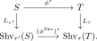
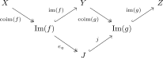
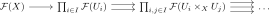
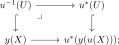
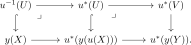

6.1. Sheaf topoi
Sheaves on Grothendieck sites provide one of the fundamental constructions of topoi. We begin by showing that localization at any pullback-stable set of sieves is left exact. We then relate Grothendieck topologies on a small category to intrinsic Grothendieck topologies and monogenic congruences on its presheaf topos. Finally, we describe the resulting sheaves by Čech descent, characterize effective epimorphisms by local sections, and discuss the functoriality induced by continuous and cocontinuous morphisms of sites.
Let \(C\) be a category. A sieve on an object \(X \in C\) is a subfunctor \(U \hookrightarrow y(X)\) of the representable presheaf \(y(X) = \Hom_C(-,X)\). Equivalently, it is a collection of morphisms with codomain \(X\) that is closed under precomposition.
Theorem 6.2. ([Lurie 2009, Proposition 6.2.2.7])
Let \(C\) be a small category, and let \(\tau\) be a collection of sieves on \(C\) stable under pullbacks. Let
be the full subcategory spanned by the \(\tau\)-local objects. Then \(\Shv_{\tau}(C)\) is a left exact localization of \(\PSh(C)\). In particular, \(\Shv_{\tau}(C)\) is a topos.
The standard proof of this result (as found for example in [Lurie 2009]) involves a detailed analysis of the “plus-construction”, which is fairly intricate. However, using the machinery of modalities and congruences established in Section 5.3, we can give a much simpler and more conceptual proof. We will freely use the notations introduced in that section.
Proof
6.1.1. Grothendieck sites
While not necessary for the definition of \(\Shv_{\tau}(C)\), the collection \(\tau\) in the previous theorem is usually taken to be a Grothendieck topology. We first formulate an intrinsic, accessible version of this notion in an arbitrary topos:
Definition 6.3. ([Anel et al. 2024, Definition 3.1.2])
An accessible Grothendieck topology on a topos \(T\) is a class \(\tau\) of monomorphisms in \(T\), called the covering monomorphisms, such that:
The class \(\tau\) contains all isomorphisms, and its saturation \(\tau^s\) is of small generation;
The class \(\tau\) is a local class, in the sense of Definition 2.46;
Covering monomorphisms are closed under composition;
Given monomorphisms \(f\colon X \hookrightarrow Y\) and \(g\colon Y \hookrightarrow Z\) in \(T\), if \(g \circ f\) is a covering monomorphism, then so is \(g\).
We refer to a \(\tau\)-local object as a \(\tau\)-sheaf and denote the full subcategory of \(\tau\)-sheaves by
Remark 1.4.
The small-generation condition is not part of the unrestricted notion of an extended Grothendieck topology in [Anel et al. 2024, Definition 3.1.2]. We impose it here so that localization at the covering monomorphisms is accessible. In the remainder of these notes, “Grothendieck topology on a topos” will always mean an accessible Grothendieck topology in this sense.
The argument from Theorem 6.2 goes through, showing that the localization functor \(L_{\tau}\colon T \to \Shv_{\tau}(T)\) is left exact.
Let \((T,\tau)\) and \((S,\tau')\) be topoi equipped with Grothendieck topologies. A morphism of topoi \(\phi_*\colon T \to S\) restricts to a functor \(\phi^{\Shv}\colon \Shv_{\tau}(T) \to \Shv_{\tau'}(S)\) if and only if its associated logos morphism \(\phi^*\colon S \to T\) preserves covering monomorphisms. Indeed, by adjunction the restriction exists precisely when \(\phi^*\) sends every \(\tau'\)-covering monomorphism to a \(\tau\)-local equivalence. Since \(\phi^*\) is left exact, these images are monomorphisms, and Proposition 6.9 identifies the \(\tau\)-local equivalences which are monic with the \(\tau\)-covering monomorphisms. In this case, the functor \(\phi^{\Shv}\) is automatically a morphism of topoi. By passing to left adjoints, we see that \(\phi^*\) commutes with sheafification:

When specializing Definition 6.3 to presheaf topoi, we recover the usual notion of a Grothendieck site.
Let \(f\colon X \to Y\) be a morphism in some category \(C\). For every sieve \(U \hookrightarrow y(Y)\), we denote by \(f^*U \hookrightarrow y(X)\) the sieve obtained by pullback along \(y(f)\colon y(X) \to y(Y)\). Note that it consists of those morphisms \(g\colon Z \to X\) such that the composite \(f \circ g\) is in the sieve \(U\).
Definition 6.7. (Grothendieck topology, [Lurie 2009, Definition 6.2.2.1])
A Grothendieck topology on a category \(C\) consists of a specification, for each object \(X\) of \(C\), of a collection of sieves on \(C\) which we will refer to as covering sieves. The collections of covering sieves are required to satisfy the following properties:
For every object \(X\) of \(C\), the identity \(y(X) \to y(X)\) is a covering sieve;
For every morphism \(f\colon X \to Y\) in \(C\) and every covering sieve \(U \hookrightarrow y(Y)\) on \(Y\), the pullback sieve \(f^*U \hookrightarrow y(X)\) is a covering sieve on \(X\);
Let \(X\) be an object of \(C\), \(U \hookrightarrow y(X)\) a covering sieve on \(X\), and \(V \hookrightarrow y(X)\) an arbitrary sieve on \(X\). Suppose that, for every morphism \(f \colon Y \to X\) belonging to \(U\), the pullback sieve \(f^*V\) is a covering sieve on \(Y\). Then \(V\) is a covering sieve on \(X\).
A Grothendieck site is a category \(C\) equipped with a Grothendieck topology.
Let \(C\) be a small category. Then there is a bijection between Grothendieck topologies on \(C\) in the sense of Definition 6.7 and Grothendieck topologies on \(\PSh(C)\) in the sense of Definition 6.3.
Proof
Proposition 6.9. ([Anel et al. 2024, Proposition 3.1.10])
Let \(T\) be a topos. There is a bijection
Proof

- Closure under base change is immediate from base-change stability of \(K\) and \(\Mono\).
- Closure under small coproducts follows since \(K\) is saturated (hence closed under coproducts in \(\Ar(T)\)), and coproducts of monomorphisms are monomorphisms in a topos.
- For descent along effective epimorphisms, consider a pullback square as in Definition 2.46 with \(f' \in \tau_K\). Then \(f' \in K\), so \(f \in K\) by locality of \(K\). Also, since pullback along an effective epimorphism is conservative and preserves monomorphisms, \(f\) is monic. Hence \(f \in K \cap \Mono = \tau_K\).
6.1.2. Sheaves and Čech descent
We now introduce the category of sheaves on a Grothendieck site, and formulate its objects in terms of Čech descent.
Definition 6.10. (Sheaf category, [Lurie 2009, Definition 6.2.2.6])
Let \(C\) be a category equipped with a Grothendieck topology \(\tau\). We denote by
the full subcategory of \(\tau\)-sheaves. We denote the left exact left adjoint by
The functor \(L_{\tau}\) is known as the sheafification functor.
Let \(X\) be a topological space. Then the poset \(\Open(X)\) of open subsets admits a Grothendieck topology, called the open covering topology, for which the covering sieves of some \(U \in \Open(X)\) are those sieves generated by open coverings \(U = \bigcup_{i \in I} U_i\). We denote the resulting topos by
The sheafified Yoneda functor \(y_{\tau}\) is the composite
Let \(\Uu = \{U_i \to X\}_{i\in I}\) be a collection of morphisms in a category \(C\). The morphism \(\bigsqcup_{i \in I} y(U_i) \to y(X)\) in \(\PSh(C)\) factors as an effective epimorphism followed by a monomorphism:
We refer to the sieve \(U \hookrightarrow y(X)\) as the sieve generated by \(\Uu\).
Since limits and colimits in \(\PSh(C)\) are computed pointwise, we see that this epi-mono factorization is also computed pointwise: for every \(Z \in C\), the subanima
consists of those morphisms \(Z \to X\) in \(C\) that factor through \(U_i \to X\) for some \(i \in I\).
If \(C\) carries a Grothendieck topology \(\tau\), we say that \(\Uu\) is a covering family if the sieve it generates is a covering sieve.
Sheaves on \(C\) may equivalently be described in terms of Čech descent.
Definition 6.14. (Čech descent)
Let \(C\) be a category and let \(\Uu = \{U_i \to X\}_{i\in I}\) be a collection of morphisms. We will denote by \(\check{C}_{\bullet}(\Uu)\) the Čech nerve of the morphism
in \(\PSh(C)\). A presheaf \(\Ff \in \PSh(C)\) is said to satisfy Čech descent with respect to \(\Uu\) if the map
is an equivalence. More concretely, if the relevant iterated fiber products of the \(U_i\) over \(X\) exist in \(C\), then \(\Ff\) satisfies Čech descent with respect to \(\Uu\) if the diagram

is a limit diagram.
Proposition 6.15. ({cf. [Lurie 2009, Lemma 6.2.3.18]})
Let \(\Uu = \{U_i \to X\}_{i\in I}\) be a collection of morphisms in a category \(C\) and let \(U \hookrightarrow y(X)\) be the sieve generated by \(\Uu\). Then a presheaf \(\Ff\) on \(C\) satisfies Čech descent with respect to \(\Uu\) if and only if it is local with respect to \(U \hookrightarrow y(X)\).
Proof
6.1.3. Effective epimorphisms in sheaf topoi
The effective epimorphisms in a sheaf topos \(\Shv_{\tau}(C)\) can be characterized as those morphisms which admit local sections, in the following sense:
Let \(C\) be a category equipped with a Grothendieck topology \(\tau\). Let \(f\colon X \to Y\) be a morphism in \(\Shv_{\tau}(C)\) and assume that \(Y = y_{\tau}(Y')\) lies in the image of the sheafified Yoneda functor. We say that \(f\) admits local sections if there exists a covering family \(\{U_i \to Y'\}_{i \in I}\) of \(Y'\) such that the base change
admits a section for every \(i \in I\).
If \(f\colon X \to Y\) is an arbitrary morphism in \(\Shv_{\tau}(C)\), we say that \(f\) admits local sections if its base change along every map \(y_{\tau}(Y') \to Y\) from a sheafified representable admits local sections.
A morphism \(f\colon X \to Y\) in \(\Shv_{\tau}(C)\) is an effective epimorphism if and only if it admits local sections.
Proof
6.1.4. Morphisms of sites
Given a functor \(u\colon C \to D\) between two Grothendieck sites, we may ask under what conditions \(u\) induces a topos morphism between the sheaf categories of \(C\) and \(D\). There are two natural candidates for such a notion, called continuous and cocontinuous morphisms of sites.
Definition 6.18. (Continuous morphism)
Let \((C,\tau)\) and \((D,\tau')\) be Grothendieck sites. A functor \(u\colon C \to D\) is called continuous if the restriction functor \(u^*\colon \PSh(D) \to \PSh(C)\) preserves sheaves, i.e. restricts to a functor
We say that \(u\) is a continuous morphism of sites if this restriction is a morphism of topoi, i.e. its left adjoint is left exact. We denote the category of Grothendieck sites and continuous morphisms of sites by \(\Site^{\cont}\). By definition, the assignment \((C,\tau) \mapsto \Shv_{\tau}(C) \subseteq \PSh(C)\) determines a contravariant functor
obtained by restricting the precomposition functoriality of the presheaf construction \(\PSh(-)\colon \Cat\catop \to \PrL\).
The left adjoint of the restriction of \(u^*\) is given by the composite
where \(u_!\) is left Kan extension along \(u\). In particular, any continuous functor \(u\) for which the left Kan extension functor \(u_!\) is left exact is a continuous morphism of sites.
Note that \(u_!\) is left exact whenever \(u\) admits a left adjoint, since then \(u_!\) is given by restriction along that left adjoint.
The following criterion is often useful for checking continuity:
Let \((C,\tau)\) and \((D,\tau')\) be Grothendieck sites, and let \(u\colon C \to D\) be a functor. Assume that every covering sieve \(U \hookrightarrow y(X)\) of \(X \in C\) is generated by a collection of morphisms \(\{f_i\colon U_i \to X\}_{i \in I}\) in \(C\) satisfying the following conditions:
Pullbacks along \(f_i\) exist in \(C\) and are preserved by \(u\colon C \to D\);
The sieve on \(y(u(X))\) in \(D\) generated by the maps \(u(f_i)\) is a covering sieve.
Then \(u\) is a continuous functor.
Proof
Let \((C,\tau)\) and \((D,\tau')\) be Grothendieck sites, and assume that the following two conditions are satisfied:
The category \(C\) admits finite limits, and \(u\colon C \to D\) preserves finite limits;
The functor \(u\) preserves covering families.
Then \(u\) is a continuous morphism of sites.
Proof
Let \(f\colon X \to Y\) be a continuous map of topological spaces. Then the preimage functor \(f^{-1}\colon \Open(Y) \to \Open(X)\) preserves finite limits and preserves coverings, hence is a continuous morphism of sites. This gives rise to a functor \(\Open(-)\colon \Top\catop \to \Site^{\cont}\). Composing it with the sheaf functor \((\Site^{\cont})\catop \to \Topos\), we obtain a functor
We now discuss a second mechanism by which a functor between Grothendieck sites induces a morphism of topoi, namely cocontinuity.
Definition 6.23. (Cocontinuous morphism)
Let \((C,\tau)\) and \((D,\tau')\) be Grothendieck sites. A functor \(u\colon C \to D\) is called a cocontinuous morphism of sites if the right Kan extension functor restricts to a functor
In particular, \(u_*\) is a morphism of topoi, with left exact left adjoint given by the composite
If we denote by \(\Site^{\cocont}\) the category of Grothendieck sites and cocontinuous morphisms, then the assignment \((C,\tau) \mapsto \Shv_{\tau}(C)\) defines a functor
obtained by restricting the right Kan extension functoriality of the presheaf construction \(\PSh\colon \Cat \to \PrR\).
Let us make the cocontinuity condition on \(u\) more concrete.
Given an object \(X \in C\) and a sieve \(U \hookrightarrow y(u(X))\) of \(u(X)\) in \(D\), we define its pullback along \(u\) as the sieve \(u^{-1}(U) \hookrightarrow y(X)\) of \(X\) obtained by forming the following pullback square in \(\PSh(C)\):

here the bottom map is the unit map \(y(X) \to u^*u_!y(X) = u^*(y(u(X)))\). Note that \(u^{-1}(U)\) consists of those morphisms \(Z \to X\) in \(C\) for which the map \(u(Z) \to u(X)\) lies in the sieve \(U\).
A functor \(u\colon C \to D\) is a cocontinuous morphism of sites if and only if for every \(X \in C\) and every covering sieve \(U \hookrightarrow y(u(X))\) of \(u(X)\) in \(D\), the pullback sieve \(u^{-1}(U) \hookrightarrow y(X)\) is a covering sieve in \(C\).
Proof

Let \(v\colon (C,\tau) \to (D,\tau')\) be a functor between sites and assume that \(v\) admits a right adjoint \(u\colon D \to C\). Then \(v\) is a cocontinuous morphism of sites if and only if \(u\) is a continuous morphism of sites. In this case, we have \(v_* \simeq u^*\).
Proof
References
- Jacob Lurie. Higher topos theory. Ann. Math. Stud. 170, Princeton, NJ: Princeton University Press. 2009.
- Mathieu Anel, Georg Biedermann, Eric Finster, André Joyal. Left-exact localizations of ∞-topoi. II: Grothendieck topologies. J. Pure Appl. Algebra, 228 (3), 63. 2024.